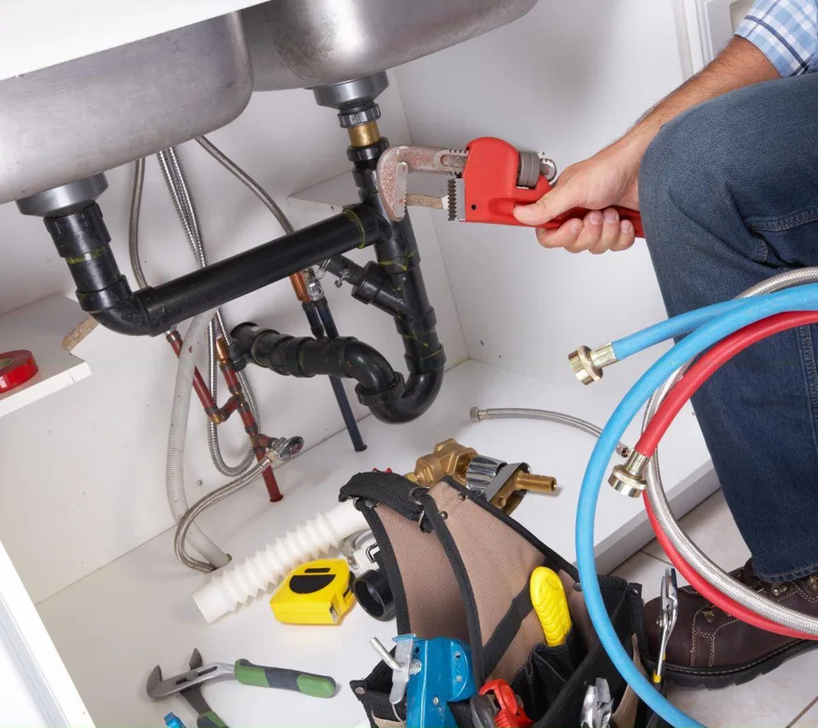

Residential
Every room witha tap in it.
Houses, condos and mobile homes. Repairs when something fails and installations when something is new, quoted before the work starts.

Room byroom.
If your job is not on the list, ask. Custom work starts with a conversation about what you need.
Bathroom
- Clogged toilets and new toilets
- Tubs taken out and fitted
- Showers, including walk-in upgrades
- Sinks, faucets and bidets
- Blocked bathroom drains
Kitchen
- Clogged kitchen sinks
- New sinks and faucets
- Dishwasher plumbing
- Garbage disposal units
- Water lines to the fridge
Laundry and outdoors
- Washing machine connections
- Garden hoses and outdoor taps
- Outdoor showers
- Hot tub plumbing
- Sump pumps
Behindthe walls.
A drain camera finds the cause of a blockage before anything is cut open, so the fix is aimed at the actual problem.
Pipes
- Frozen pipes thawed
- Leaks and cracks found and repaired
- Re-piping and pipe replacement
- Low water pressure traced to its cause
Drains
- Drain cleaning and repair
- Drain snaking
- Camera inspections
- Main sewer line work
Water and heat
- Water heater repair and installation
- Tankless water heaters
- Filtration and water treatment
- Advice on fixtures that fit the room
One honestlimit.
We plumb appliances in and connect their water lines. We do not repair the appliance itself, and a fault under warranty is best taken to the retailer.